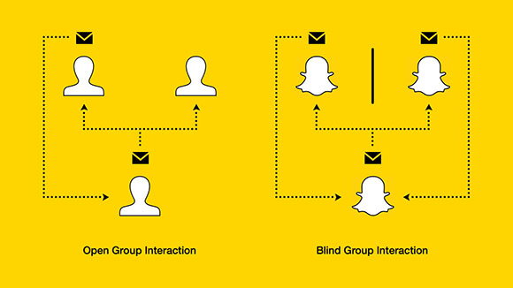

The Secret to Snapchat's Growth
December 2, 2013 ⏱2 min

Sometimes we send group messages with the hope of making a group decision, while other times we're attempting to elicit a response from every person in the group. Here's how Snapchat has mastered the latter.
What’s really behind Snapchat’s success? It sells itself as a way to share expiring content, but that isn’t the only reason for its rising popularity. While the urge to sext without penalty or tastefully doodle on the faces of friends rages within us all, the app’s unprecedented growth can actually be attributed to the good manners of those who use it. Really.
The genius of Snapchat is that users interact through 1:1 relationships while publishing on a 1:many level. When I receive a message in Snapchat, I’m unable to see who else got it, if anyone. What if I’m the only person my friend sent it to? Well then, it would certainly be rude not to respond. I guess I’ll reply with a message of my own so they don’t feel ignored or unwanted.
Now imagine that my friend actually sent it to a whole bunch of people, many of whom feel the need to respond — either because they actually want to or simply as a matter of social etiquette. When someone says hi to you, you say hi back.
More social networks should be taking advantage of this type of interaction. While there are certainly times when open group interaction is preferable (such as planning an event), what if users were able to message a group of people, individually, where each recipient sees only the message intended for them? Instead of starting a group message with “Anyone around tonight?”, you could message a group of people individually with a single message: “Hey @*group_name, you around tonight?”. A message addressed directly to me is something I just can’t ignore.
This can be tough to pull off. Email marketing’s poor attempts at personalization have shown how good people have become at discerning genuine content from a promotional blast. Right, FIRST_NAME? For social etiquette to drive activity, recipients need to believe a real person is expecting a real response.
The real value of social media has always been building and strengthening 1:1 relationships at volume. When done right, blind group interactions can act as a bulk action for making people feel special, giving social networks the growth they need while providing users the responses they're looking for.